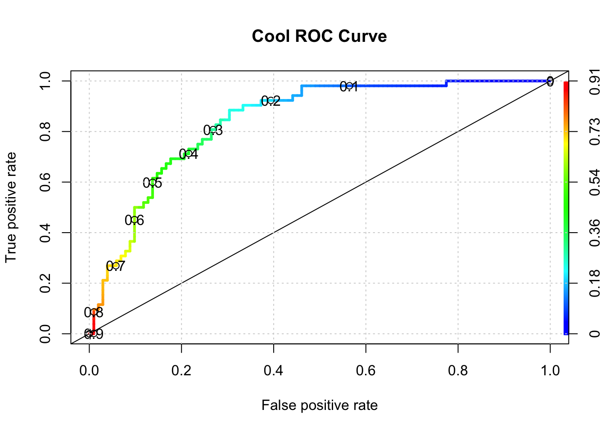

Chapter 4 Other Methods ?
Well, we could use another method to see if it yields better performance as determined by the AUC ? Let’s use the ranger function which is a fast implementation of random forests. One thing you will notice is that we need to include the “probability” argument in the call to ranger to get the necessary probabilities for computing the AUC. This is one of the aggravations with using different functions. They all have their own peculiar way of doing things.
library(ranger)
ranger_mod <- ranger(diabetes ~ .,
data = train,
probability = TRUE,mtry=4)
# Returns probabilities
ranger_pred <- predict(ranger_mod,data=test)
myroc <- roc(test$diabetes,
ranger_pred$predictions[,2])
myroc$auc## Area under the curve: 0.8407pred <- ROCR::prediction(ranger_pred$predictions[,2],
test$diabetes)
perf <- performance(pred,
"tpr",
"fpr")
plot(perf,colorize=T,
print.cutoffs.at=seq(0,1,by=0.1),
lwd=3,las=1,main="Cool ROC Curve")
abline(a = 0, b = 1)
grid()
## [1] 0.8406863It turns out that this didn’t appear to improve things - at least with one invocation of the method.
4.1 Improving The Model(s)
We haven’t accomplished very much here because we need to look at multiple versions of the data in case we sampled a number of outliers in the creation of our training data. Or, maybe we have excluded a large number of outliers in the training set so they wound up in the test data set which means that the predictive power of our model isn’t as robust as it should be.
Our next steps should involve creating multiple versions of the training and test pairs (say 3 times), compute the optimal AUC, and then look at how those values vary for each of those individual versions. If the AUCs vary widely then maybe our model is over training. If it’s not varying widely, it could be that that the model has high bias.
4.2 Cross Fold Validation
This is a method that gives us multiple estimates of out-of-sample error, rather than a single estimate. In particular, we’ll use an approach called “K-Fold Cross Validation” where we will partition our data into 3 individual “folds”" which are basically equal in size. Then we’ll create a loop that does the following:
- Combines 2 of the folds into a training data set
- Builds a model on the combined 2-folds data
- Applies the model to holdout fold
- Computes the AUC value and stores it
Each fold is simply a portion of the data. We’ll generate a list called “folds” that contains 3 elements each of which are 256 index elements corresponding to rows in pm. The way we did the sample insures that each row shows up only in one fold.
To drive this home, and in case the graphic didn’t help, consider the following simple data frame:
## id m1 m2 m3
## 1 a1 0.05 0.81 0.78
## 2 b2 0.87 0.04 0.89
## 3 c3 0.58 0.36 0.20
## 4 d4 0.31 0.86 0.77
## 5 e5 0.96 0.70 0.60
## 6 f6 0.59 0.68 0.96
## 7 g7 0.53 0.35 0.16
## 8 h8 0.38 0.55 0.53
## 9 i9 0.32 0.14 0.87If we created three folds out of this data frame it would look like the following:

Here is our function to implement the K-Fold validation. It’s pretty straightforward to define in terms of coding though it winds up being somewhat specific to the particular method we are using.
cross_fold <- function(numofolds = 3) {
# Function to Do Cross fold validation
# Split the data into K folds (numofolds)
folds <- split(sample(1:nrow(pm)),1:numofolds)
# We setup some blank lists to stash results
folddf <- list() # Contains folds
modl <- list() # Hold each of the K models
predl <- list() # Hold rach of the K predictions
auc <- list() # Hold the auc for a given model
# Create a formula that can be used across multiple
# iterations through the loop.
myform <- "diabetes ~ ."
for (ii in 1:length(folds)) {
# This list holds the actual model we create for each of the
# 10 folds
modl[[ii]] <- glm(formula = myform,
data = pm[-folds[[ii]],],
family = "binomial"
)
# This list will contain / hold the models build on the fold
predl[[ii]] <- predict(modl[[ii]],
newdata=pm[folds[[ii]],],
type="response")
# This list will hold the results of the AUC per iteration
pred <- ROCR::prediction(predl[[ii]],
pm[folds[[ii]],]$diabetes)
roc <- performance(pred,measure="auc")
auc[[ii]] <- roc@y.values[[1]]
}
return(unlist(auc))
}Running this is now quite simple. By default, this function will loop three times corresponding to the number of folds. During each iteration it will:
- use glm to build a model on the training folds
- create a prediction object using the training fold
- compute the underlying AUC associated with the prediction
- store the AUC in a vector
At the end of the function, the vector containing the computed AUCs will be returned.
## [1] 0.8537200 0.8290205 0.7944576## [1] 0.8674473 0.8032407 0.7715248 0.8680715 0.7972689 0.8523886 0.8361111 0.8111111We could take the average of the AUCs to get a sense of how well this method would apply to unseen data.
## [1] 0.8258955Let’s plot the individual values: